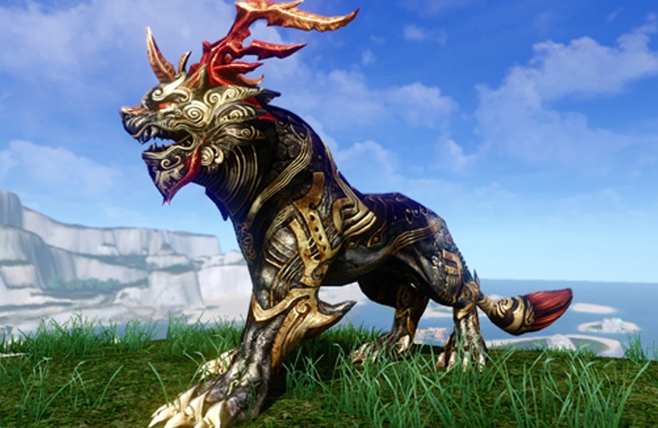
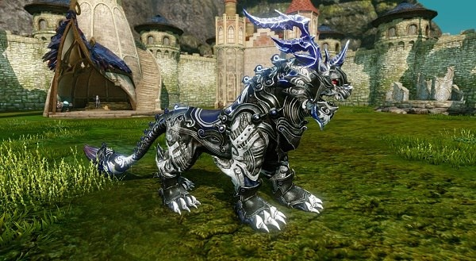
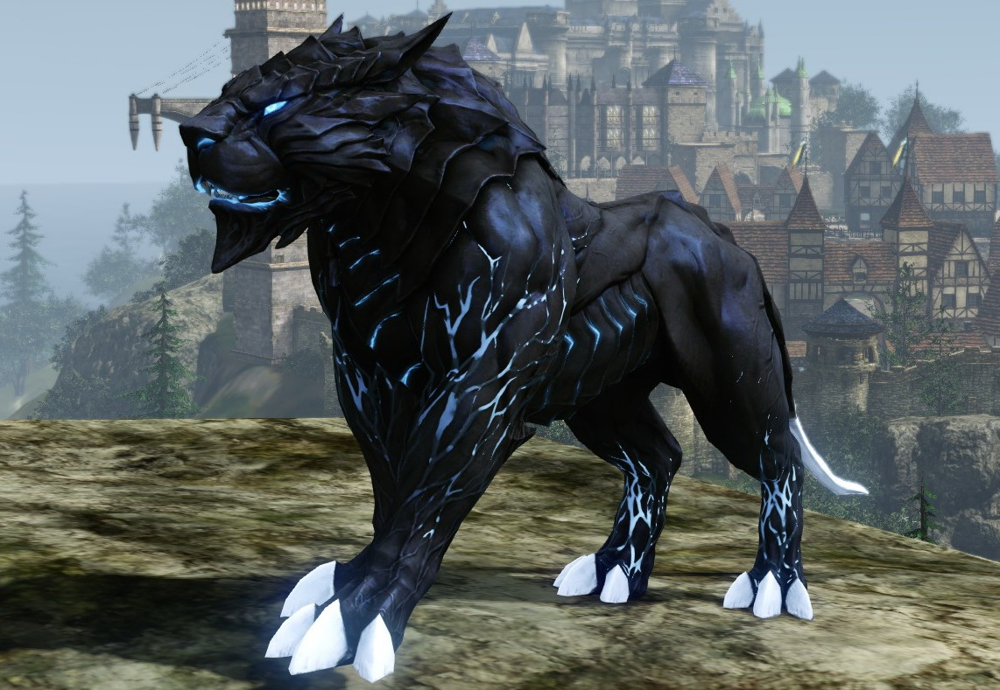

Предметы ArcheAge
Биржа игровых ценностей AA-Shop - ресурс, на котором покупка вещей ArcheAge реализована максимально просто и удобно, а также выгодна для всех участников. На нашем сайте продавцы получают оплату только после выполнения заказов.
Химерион
Отпрыск самой Сехекмет свиреп, но послушен и обучен носить седока. Химериону подходит только сбруя, предназначенная специально для него.
Скорость передвижения: 11.5 м/с.
Азурион
Серебристый синерогий Азурион ни скоростью, ни силой не уступает Химериону, своему золотому брату. Азуриону подходит только сбруя, предназначенная специально для него.
Скорость передвижения: 11.5 м/с.
Фуксория

Легенды гласят, что сам Айэр, бог любви и покровитель ветров, связал в один клубок первобытные вихри, непокорные тайфуны, игривые бризы и ледяные бореи. Смешавшись, воздушные потоки обрели форму белоснежной лисицы — фуксории. Тело ее соткано из легкого Зефира, а поступь стремительна, как неуловимый мистраль.
Скорость передвижения: 11.5 м/с.
Тайфун
По черной шкуре этого великолепного ездового зверя пробегают грозовые молнии.
Скорость передвижения: 11.5 м/с.
Штормовой дракон

Если верить рассказам путешественников, этот дракон – порождение страшной грозы, разразившейся над морем Бурь. Чешуя, покрывающая его тело, закалена небесными молниями, мощные крылья способны превратить небольшой воздушный вихрь в ужасающий смерч, а рев напоминает раскаты грома.
Скорость передвижения: 11.5 м/с.
Ездовая корова

Ездовая корова — корова приученная к седлу, способная перевозить всадника. Но главное ее назначение — производство ингредиента для изготовления экологически чистого топлива.
Скорость передвижения: 7.0 м/с.